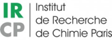

conception et fabrication
d'alliages

Alliages Ni-Cr-M
via une approche à haut débit
PVD à double cible
matériaux en vrac de prototypage rapide
L’objectif du projet CROCUS est le développement d’un micro-laboratoire d’analyse in situ de la corrosion pouvant être mis en ligne avec des procédés de synthèse de matériaux ou revêtements anticorrosion, également haut débit, tels que ceux mis en oeuvre sur la plateforme de PECVD (plasma enhanced chemical vapor deposition) atmosphérique en cours d’investissement dans le cadre du projet A-DREAM, la plateforme de PVD (physical vapor deposition) combinatoire mise en oeuvre dans le projet ciblé HIWAY-2-MAT ou la plateforme développée à l’INSTN (institut national des sciences et techniques nucléaires) de Saclay, DIADEM-2D.
A cette fin, une nouvelle plateforme de bibliothèque combinatoire de systèmes de conception/fabrication d’alliages couplée à une analyse électrochimique à haut débit à l’échelle élémentaire sera développée dans le projet. Une nouvelle méthode, la
spectroélectrochimie d’émission atomique (AESEC), sera utilisée pour accéder à l’électrochimie résolue par éléments, complémentaire aux mesures électrochimiques conventionnelles. Cette
technique permet de tracer chaque élément d’alliage lors de l’activation, de la passivation et de la
dégradation du matériau. L’objectif de CROCUS consiste en la mise en œuvre d’une technique
d’analyse électrochimique élémentaire couplée à d’autres techniques de mesure in situ permettant
l’étude du comportement en corrosion de matériaux/revêtements multiéléments complexes (e.g.,
alliages industriels, oxydes complexes).
Ce projet contribuera à compléter les connaissances existantes sur les réactions de corrosion dans les systèmes multimatériaux fournissant des informations cinétiques in situ et operando à l’échelle élémentaire à l’aide de cette plateforme miniaturisée d’étude de la corrosion. Enfin une nouvelle méthode de découverte accélérée de matériaux anticorrosion sera proposée.
Alliages Ni-Cr-M
via une approche à haut débit
PVD à double cible
matériaux en vrac de prototypage rapide
AESEC-SDC (high-throughput)
AESEC-EIS
AESEC-EQCM (kinetics)
SECM (local measurement)
numerical simulation:
-ML
-symbolic AI (ExpressIF®)
-CALPHAD
Non-aqueous electrochemistry
Scale-up analysis
"3ème étage, Tour 13-14
place Jussieu
75005 Paris, France
Email: junsoo.han@sorbonne-universite.fr
Phone: +33